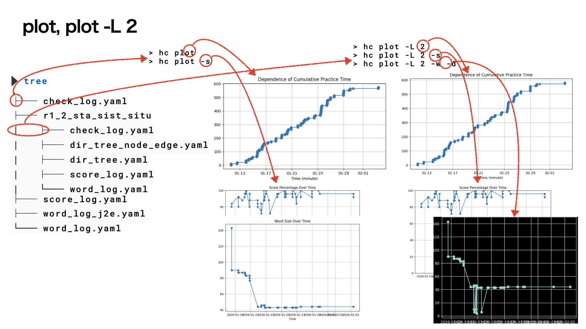

hc plot
Table of Contents
1. plot
1.1.
学習の進捗状況を確認するために
hc plot
がある．

通常のplotでは実行directoryにある
- check_log.yaml
- score_log.yaml
を参照して
- cumulative time(without option)
- score (-s)
- word number (-w)
を表示する．
1.2. dirごと，全体
記憶を確実に進めるためには，
divide and conquer(各個撃破）
が基本．したがって，細かく分けたdirごとに 仕上げていくのがいい． また，それらをまとめる(chunking)する単語を directory名に置いておくのがコツ．
しかし，全体の進捗が知りたい時がある． その時には
hc -L 2
を使って，cwdと一つ下の合計を表示することができる．